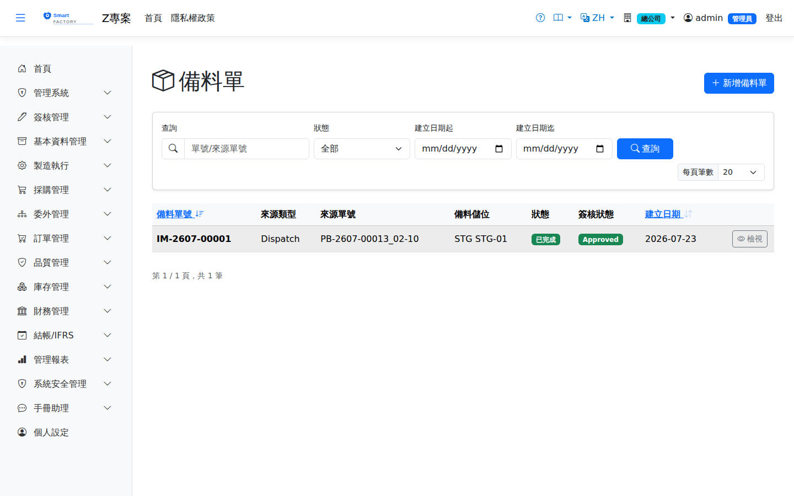

備料單Material Staging
路由：/MaterialStaging | 工單備料暫存與齊套確認Route: /MaterialStaging | Work order material staging and kitting confirmation
依工單需求先行揀集物料至備料區，確認齊套後供發料使用，縮短開工等待。Picks material for a work order into the staging area in advance and confirms it is complete, shortening the wait before work starts.

備料暫存畫面截圖（示意，實際欄位/資料依權限與查詢條件而異）Material staging screenshot (illustrative; actual fields and data vary by permission and query criteria)
查詢Search
1
查詢列輸入條件後點「查詢」；欄位標題可點擊排序，清單下方有分頁導航。Enter your criteria on the query bar and click "Search"; column headers can be clicked to sort, and the paging controls sit below the list.
作業流程Process
建立備料單Create Staging Order
1
點「新增」開啟側欄，選擇Click "Add" to open the panel and choose 來源類型Source type（生產批／工單／派工單／手動／訂單）。選生產批、工單或派工單時，來源單號改為可查詢下拉。 (production batch / work order / dispatch / manual / sales order). When a production batch, work order or dispatch is chosen, the source document number becomes a searchable dropdown.
2
點「Click " 帶入用料Load Materials」自動帶出該來源尚待備料的明細。帶出的數量已扣掉已發料量與既有備料單已鎖的量，重複開單不會把同一批料鎖兩次；Backflush（完工沖銷）料件不會帶入。 " brings in the lines of that source still to be staged. The quantities already exclude what has been issued and what other staging orders have locked, so raising a second order never locks the same material twice; backflush lines are not brought in.
3
確認Confirm 備料倉／備料儲位Staging warehouse / staging location。預設值依「工作中心設定 → 系統參數」自動帶出，可自行修改。. The default comes from the work center settings and the system parameters, and can be changed.
4
逐行填寫Fill in line by line 揀料來源倉／儲位Pick From Wh/Location（要從哪裡把料搬到備料倉），儲存為草稿。 (where the material is moved from into the staging warehouse), then save it as a draft.
5
內容無誤後點「確認」鎖住庫存（硬預留），單據狀態轉為When the content is correct, click "Confirm" to lock the stock (a hard reservation); the document status becomes 已確認Confirmed。
揀料移入備料倉Pick into the staging warehouse
1
實際揀料完成後，點「Once picking is finished, click " 揀料完成（移入備料倉）Complete Picking (Move to Staging)」。系統依明細逐行產生同廠調撥異動（來源儲位 → 備料儲位），回寫已揀量，狀態轉為 ". The system creates a same-plant transfer movement per line (source location → staging location), writes back the picked quantity, and the status becomes 已備妥Staged。
2
任一行未指定來源儲位時整張擋下——半套移庫會讓料件散在兩處，之後領料無從對應扣帳。If any line has no source location, the whole document is blocked — a half-finished move would scatter material across two places and leave nothing to deduct against later.
3
料件此時已在備料倉The material is already in the staging warehouse at this point 待領用Awaiting issue，實際投入生產仍須開; putting it into production still requires a 發退料單Material Slips從備料倉領出，成本才會進工單。 Cost only reaches the work order once the material is issued out of the staging warehouse.
已備料的料要先從備料儲位扣：這張工單在備料區還有的量，發料／領料一定要先從備料儲位領完；備料區不夠的部分才可以從其他儲位領。桌機存檔時、手機送出時與過帳時都會檢查，違反會擋下並說明該從哪個儲位領、要領多少。退料不受影響。Staged material must be taken from the staging location first: whatever is still in the staging area for this work order has to be issued or requisitioned from the staging location; only the shortfall may come from other locations. This is checked when a desktop slip is saved, when the mobile slip is submitted and when it is posted; a violation is blocked with a message saying which location to use and how much. Returns are not affected.
後續作業Follow-up actions
1
已過帳單據如需沖銷，點「作廢」並填寫原因；系統產生反向庫存/帳務異動。To reverse a posted document, click "Void" and enter a reason; the system creates the reversing stock and accounting entries.
預留與可用量Reservation and available quantity
- 「確認」時會依明細行建立Confirming creates, line by line, 硬預留Hard reservation鎖住庫存；任一品號可用量不足即整張擋下，維持草稿。 locks the stock; if any item has too little available the whole document is blocked and stays a draft.
- 來源為工單的備料單Staging order sourced from a work order：MRP 展開時通常已為該工單鎖住庫存，這部分算在這張備料單的可用量內 （不會被工單自己的預留擋住）；確認後系統會把工單的預留: the MRP run has usually already locked stock for the work order, and that portion counts towards the available quantity of this staging order (it is not blocked by the work order's own reservation); once confirmed, the system moves the work order's reservation 等額轉移transferred one for one給備料單， 同一批料不會被鎖兩次，也不會誤縮其他工單的可用量。工單的 to the staging order, so the same stock is never locked twice and the available quantity of other work orders is not reduced by mistake. The work order's 用料狀況Material status 仍會把備料單鎖住的量算成「為這張工單保留的量」，備完料不會反而變缺料。the quantity locked by the staging order still counts as reserved for that work order, so staging can never make the order look short.
- 來源為手動／訂單Sourced manually or from an order的備料單不會挪用工單預留，只能動用廠級自由量。 staging orders do not draw on the work order's reservation and can only use free plant-level stock.
- 「作廢」會釋放本單預留，庫存回到自由量；若原本是工單轉移過來的預留，"Void" releases the reservation held by this document and returns the stock to free quantity; where the reservation was transferred from a work order, 不會自動還原給工單is not returned to the work order automatically， 該工單需重新確認料況（或重跑 MRP）才會再鎖料。, the work order has to have its material status confirmed again (or MRP re-run) before stock is locked once more.
- 揀料移入備料倉不會釋放預留Picking into the staging warehouse does not release the reservation：料只是換了儲位、仍未投入生產，鎖量要撐到領料過帳才等額退場， 否則備妥到領用之間會出現空窗，已備好的料可能被別張工單搶走。: the material has only changed location and is still not in production, so the lock has to hold until the issue is posted and only then be released one for one, otherwise a gap opens between staging and issue and another work order could take material that is already prepared.
- 領料過帳時自動消耗預留The reservation is consumed automatically when the issue is posted：發退料單過帳會依「先備料單、後工單」的順序等額釋放這張工單的鎖量； 工單完工或作廢時，備料單接手的殘留鎖量也會一併釋放。: posting an issue or return releases this work order's locked quantity one for one, staging order first and work order second; when the work order is completed or voided, any residual lock taken over by the staging order is released with it.
- 備料倉庫存仍計入可用量Stock in a staging warehouse still counts toward available quantity：與待驗倉不同，備料倉的料已被本單預留鎖住， 若再從可用量排除一次等於同一批料扣兩次，全廠可用量會憑空短少。: unlike a quarantine warehouse, material in the staging warehouse is already locked by this document's reservation, so excluding it from the available quantity again would deduct the same stock twice and understate the plant's available quantity.
列印Printing
清單每列的 按鈕（需有列印權限）在新分頁開啟含 QR Code 的列印單，可直接列印或另存 PDF。備料單列印含來源、備料區，以及各行品號、品名、需求量、已揀量、單位與出庫倉儲位，供倉庫揀料。The button on each row of the list (print permission required) opens a printout with a QR code in a new tab, ready to print or save as PDF. The staging printout shows the source and staging area, and for each line the product code and name, required and picked quantities, unit and source warehouse and location, for picking.
欄位說明Field reference
查詢條件Query criteria
| 條件Condition | 說明Guide |
|---|---|
| 關鍵字Keyword | 備料單號或來源單號的模糊比對Partial match on the staging order number or the source document number |
| 狀態Status | 依備料單狀態篩選Filters by staging order status |
| 建立日期起 / 迄Created from / to | 依建立日期區間篩選Filters by creation date range |
清單欄位List columns
| 欄位Field | 說明Guide |
|---|---|
| 備料單號Slip ID | 系統採番，不可修改Numbered by the system; not editable |
| 來源類型Source type | 備料需求的來源作業（工單、銷貨等）Source operation of the staging demand (work order, sales and so on) |
| 來源單號Source doc No | 對應的來源單據號碼，可回溯需求出處Number of the source document, so the origin of the demand can be traced |
| 備料儲位Staging Location | 備妥料件集中存放的暫存儲位；備料完成後庫存移入此儲位Temporary location where staged material is gathered; stock moves here once staging is complete |
| 狀態Status | 備料單的執行進度（草稿／已確認／備料中／已完成／已作廢）Progress of the staging order (Draft / Confirmed / In Progress / Completed / Cancelled) |
| 簽核狀態Approval | 線上簽核的進度（未送審／待簽核／已核准／已駁回）Online approval progress (not submitted / pending / approved / rejected) |
| 建立日期Created | 單據建立時間Time the document was created |
相關畫面Related screens
發退料單Material Slips、備料進度追蹤Material Slip Progress、工單用料狀況WO Material Status